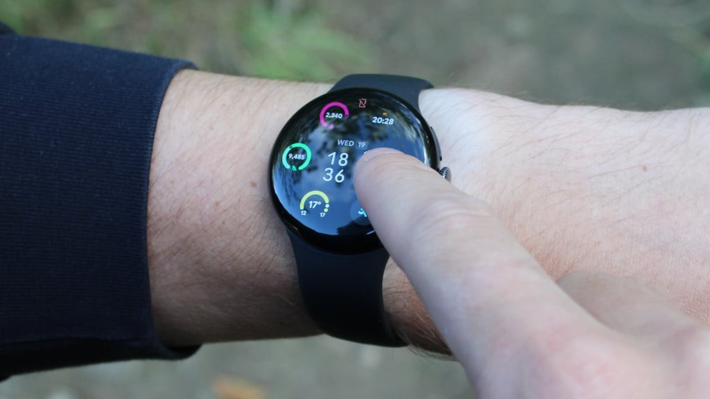

抬腕后能立即做哪些事
手里提着东西时，设置几分钟计时不值得先放下东西、解锁手机再找应用。Google把抬腕语音入口、部分本机指令和建议回复放到同一块表上，双指捏合可以确认发送。十一月二日Wareable的使用评测认为离线小指令有实际便利，同时指出复杂查询仍需要网络。这个差别应当反映在界面反馈中：本机计时与读取最新外部信息不是同一类请求。购买前可列出自己最常做的几件事逐项试用，不要把离线一词理解成整套Gemini都能脱网工作，也不要只在手机一直联网时判断离线体验。
Google Pixel Watch 5 · 可穿戴实测 · 独立媒体评测

手里提着东西时，设置几分钟计时不值得先放下东西、解锁手机再找应用。Google把抬腕语音入口、部分本机指令和建议回复放到同一块表上，双指捏合可以确认发送。十一月二日Wareable的使用评测认为离线小指令有实际便利，同时指出复杂查询仍需要网络。这个差别应当反映在界面反馈中：本机计时与读取最新外部信息不是同一类请求。购买前可列出自己最常做的几件事逐项试用，不要把离线一词理解成整套Gemini都能脱网工作，也不要只在手机一直联网时判断离线体验。
Google的工程说明把路线改善归于软件：压缩原始GPS资料，送到服务器，结合建筑模型及参考站校正，再交回健康应用。这没有给手表换一颗新GPS传感器。对事后查看走过哪条路，重新计算可能有用；对正在跑步的人，已经显示过的偏差不会被事后地图倒回修正。若使用者主要依靠手表控制配速，就应分别检查运动中的距离提示、分段时间与同步后的地图，不能拿最后一张较整齐的轨迹代替整个运动过程的质量。这里也存在数据边界：本机语音动作不代表位置处理同样留在表上。
Wareable作者连续佩戴数周，展示柏林树木覆盖路线与Garmin的对照；最终距离接近，但部分轨迹仍偏离路径，没有观察到普遍的大幅改善。这是一个人的特定场景，不能据此否定所有城市高楼条件，也不能把厂商的广泛测试主张直接当成每次跑步的结果。相同腕位、路线和设置的重复记录更适合解释差异。对于本来就会携带手机的人，离线指令的新增价值也可能小于宣传；常在弱网环境运动的人，则有理由先试这些实际动作，而不是只比较芯片型号。
手表需要兼容Android手机，完整高级健康体验另有付费服务；不能把一次硬件购买理解为所有未来功能都包在内。Google八月的原始公告还把部分功能标为随后提供，说明首发清单与当日可用状态必须分开。这里采用的是十一月的新评测，不重新包装八月发布。实际试用可检查抬腕是否误触发、建议回复内容能否看清、双捏确认是否容易误发，以及一天中什么时候必须充电。健康指标的存在也不等于诊断已验证，本篇只讨论输入操作与运动记录的使用边界。